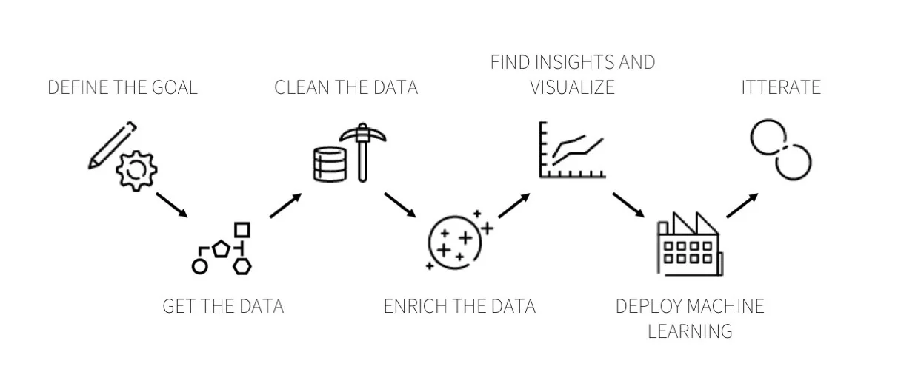

Using data from Taarifa and the Tanzanian Ministry of Water, can you predict which pumps are functional, which need some repairs, and which don't work at all? This is an intermediate-level practice competition. Predict one of these three classes based on a number of variables about what kind of pump is operating, when it was installed, and how it is managed. A smart understanding of which waterpoints will fail can improve maintenance operations and ensure that clean, potable water is available to communities across Tanzania.
Data Science Project Steps
I will complete the This Data science Project in 7 Steps. These Steps are:
- 1 Define The Goal
- 2 Get The Data
- 3 Clean The Data
- 4 Enrich The Data
- 5 Find Insights and Visualize
- 6 Deploy ML
- 7 Itterate
I got the 7 steps and the picture at the top from Dataiku website. You can reach the website via this link .